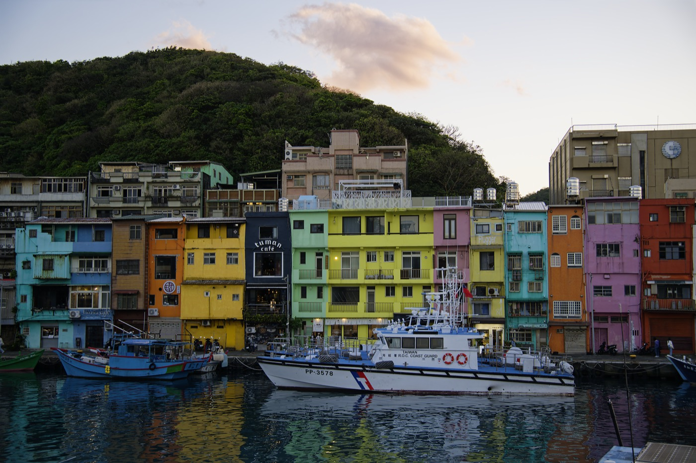
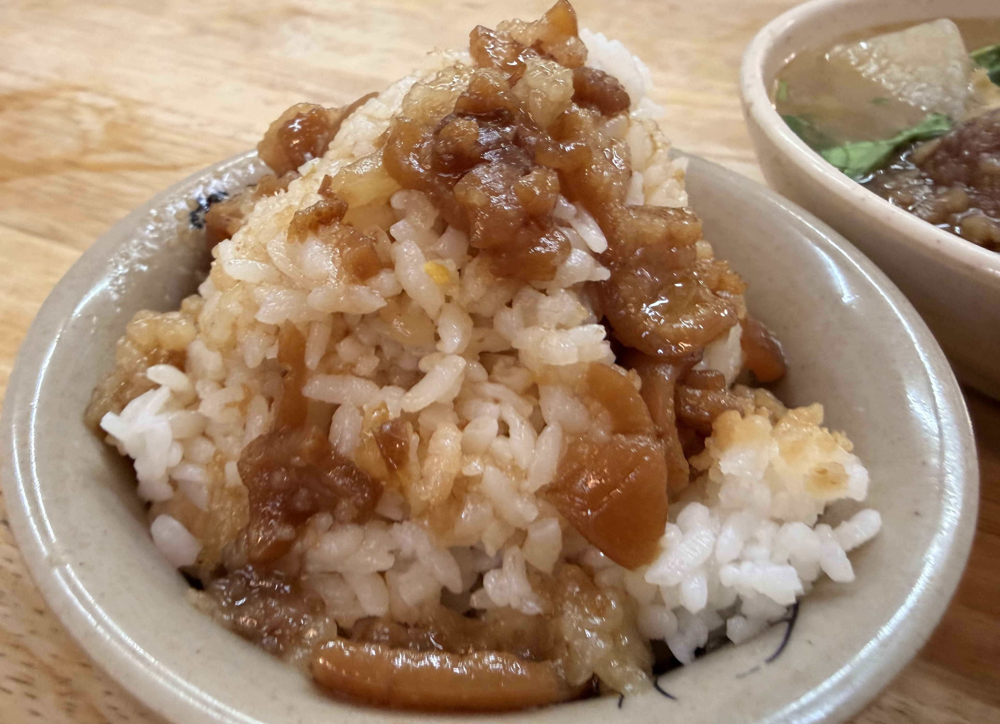
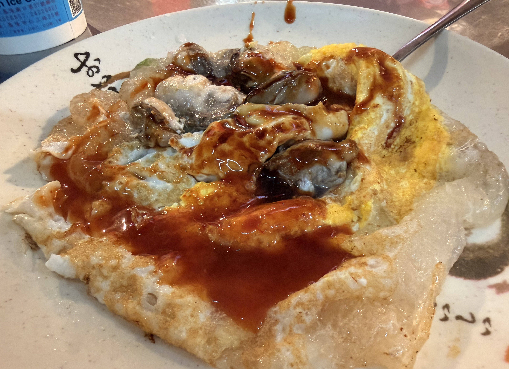
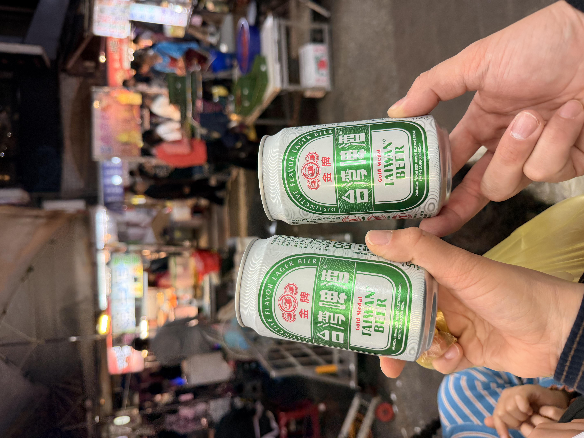
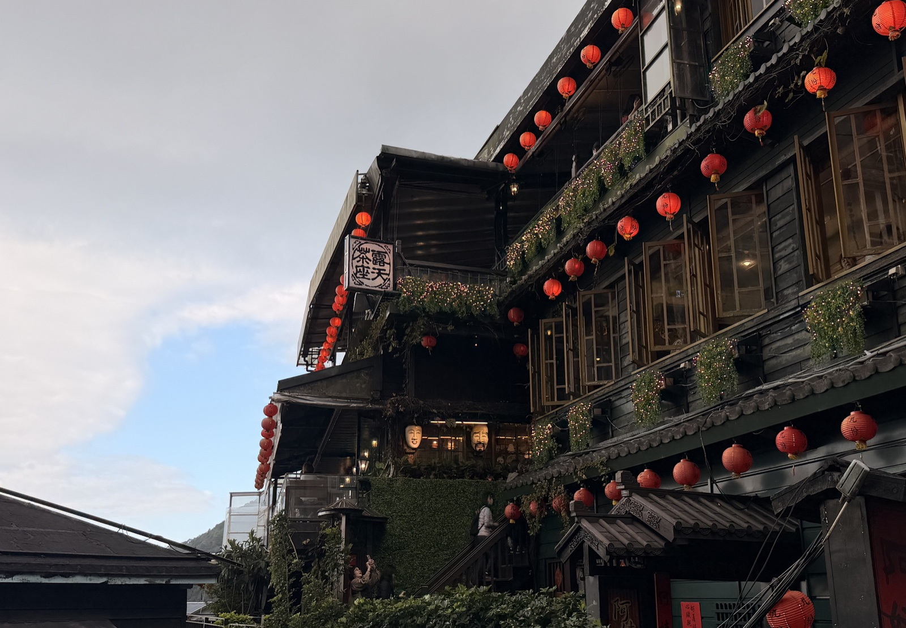
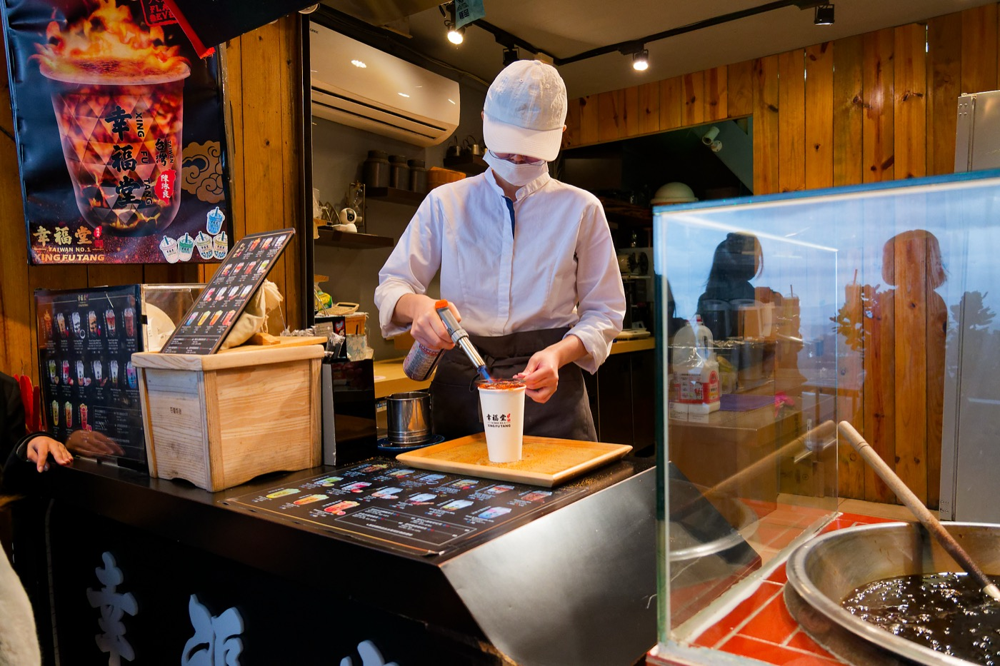
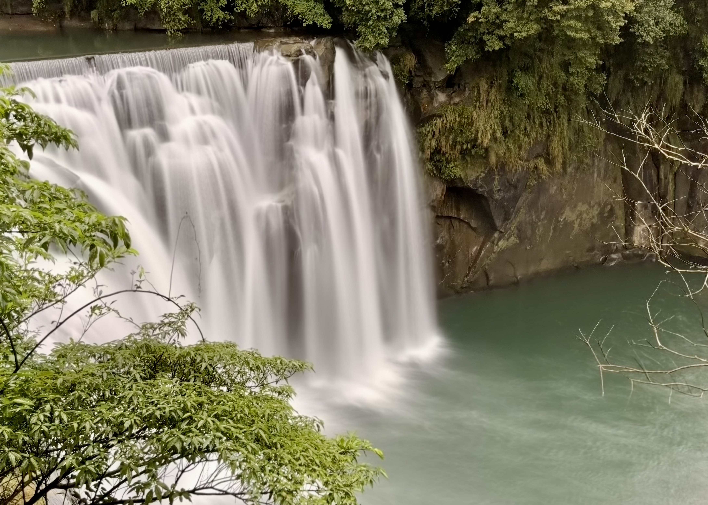
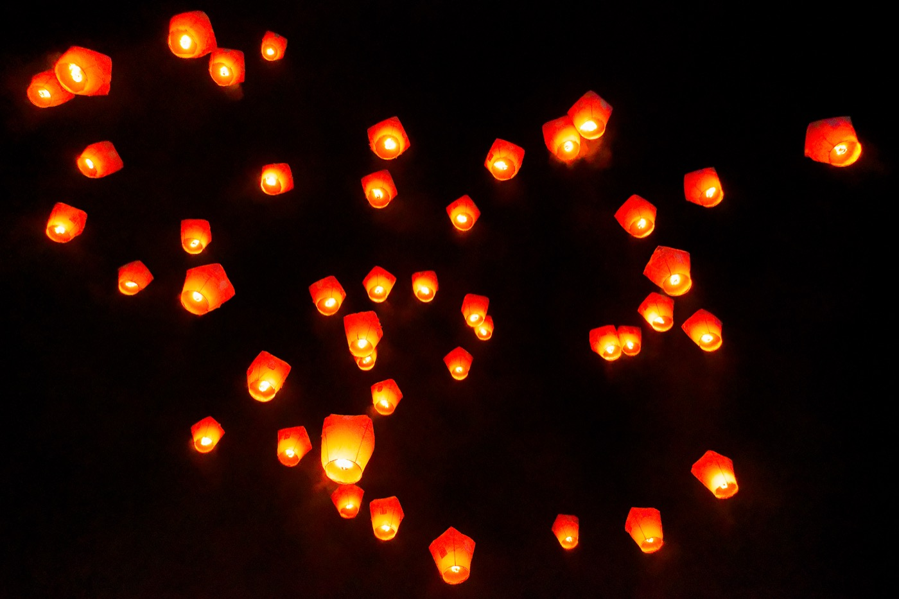

Subestimaba un poco a Taiwán. Cerca, fácil — con esa actitud llegué, y me ganó por completo. La comida es buena, la gente es amable. No solo mejor de lo esperado: el viaje quedó fuera de lo que había imaginado.
Esta vez, tres días. Con base en Taipéi, y escapadas a Keelung, Jiufen y Shifen.
Keelung — Puerto Pesquero de Zhengbin: esta vista no debería ser legal
A unos 30 minutos en tren desde Taipéi está Keelung, una ciudad portuaria. Dentro hay un sitio que tenía muchísimas ganas de ver: el "Puerto Pesquero de Zhengbin".

Una hilera de edificios de colores junto al puerto, con barcos pesqueros. ¿Esto es un puerto taiwanés? Casi demasiado bonito. Antes era un puerto viejo cualquiera, hasta que repintaron los edificios en colores vivos y se hizo viral en Instagram. Pero no tiene esa pose de "para la foto" — los pescadores siguen trabajando ahí. Es un puerto vivo, y eso es lo bueno.

Llegar al atardecer fue acertar. El sol se refleja en el mar y los edificios de colores se encienden todavía más. Anduve un rato con la cámara y, cuando me di cuenta, había pasado más de una hora.
Si caminas un poco más allá, ves a la gente local preparando la cena tan tranquila, niños jugando. Aun con turismo, el lugar todavía huele a vida cotidiana. Me gustan los lugares así.
Mercado nocturno de Keelung

A poca distancia a pie del puerto de Zhengbin, el mercado nocturno Keelung Miaokou es uno de los más famosos de Taiwán. La calle iluminada por farolillos está cubierta de puestos, con locales y turistas mezclados.


Lu rou fan, tortilla de ostras, sopa de albóndigas de pescado… pedí de más y casi reviento. En Taiwán comas lo que comas está rico, y barato. Imposible no quedar contento.

Jiufen

A unos 30 minutos en coche desde Keelung está Jiufen. Antes fue un pueblo minero de oro próspero, y fue escenario de la película Una ciudad de tristeza. Callejones de escaleras de piedra con casas de té y tiendas de souvenirs — cualquier ángulo es una postal.


Shifen y la cascada de Shifen

Shifen es famosa sobre todo por los farolillos voladores, pero la cascada de Shifen, cerca, también vale la pena. La amplitud del agua cayendo sobre la roca verde es la razón de que la llamen "el Niágara de Taiwán". Vale el desvío.
Taipéi — Memorial a Chiang Kai-shek
También me acerqué al Memorial a Chiang Kai-shek, en Taipéi. Un edificio enorme construido en su memoria, con una plaza inmensa alrededor. Dentro está la estatua sentada de Chiang, custodiada por guardias en posición de firmes.
Haber leído algo sobre la historia moderna de Taiwán antes hizo que estar parado frente a la estatua pesara más. "Gran líder" o "dictador" — se podría argumentar lo uno y lo otro — y los turistas se hacen fotos delante de su gigantesca figura. La historia es complicada.
Shifen — farolillos: nunca olvidaré esta noche
Lo que más ilusión me hacía era soltar farolillos en Shifen — esa experiencia de escribir un deseo en un farolillo de papel y soltarlo al cielo nocturno.

Llegando en tren local desde Taipéi, cruzando las montañas, Shifen fue un pueblo carbonero. Hoy se conoce por los farolillos y la cascada, y la calle vieja está llena de tiendas que los venden.
Uno tras otro, los farolillos suben al cielo oscuro. Al principio cuentan, luego van siendo más y más, y de pronto el cielo se tiñe de naranja.
Como era un tour no pude elegir el color, pero la chica que nos guió explicó con cuidado el significado de cada uno. Al parecer cambia según el sitio o la tienda, pero más o menos:
El instante en que un farolillo desaparece en la noche da una sensación rara — como soltar algo importante, pero también como liberarse. Es algo que solo se entiende viéndolo en persona.
Y la gente, simplemente amable
Lo que me quedó de Taiwán no fueron solo los paisajes y la comida. Sobre todo, la gente fue amable.
Para los traslados usé Uber para todo. Abres la app, viene el coche, y aunque no haya idioma común te llevan sin perderse adonde sea. Muchos coches eran modelos recientes — Tesla incluidos — más avanzados que en Japón, sinceramente.
Cuando empezó a llover, un conductor de Uber me dio dos paraguas. "Llévatelos", me dijo riendo. No arrancó hasta que los acepté.
Mirando un mapa en una galería subterránea, una persona del lugar pasó y se acercó a hablarme en japonés. No siguió de largo — se paró a hablar. No daba la sensación de la amabilidad practicada de quien atiende turistas, sino simplemente, llanamente, amabilidad.
Más que el paisaje, lo que se queda en el corazón de Taiwán es la calidez de la gente.
Quiero volver. Pronto.
Tres días no alcanzaron ni de lejos. Tainan, Kaohsiung, Hualien, Taroko… todo lo que me faltó. Para estar tan cerca de Japón, es raro encontrar un lugar tan claramente "extranjero".
La próxima vez, una semana — preferiblemente recorriendo en moto pequeña o en moto de alquiler. ¿Se podrá dar la vuelta a toda Taiwán? Tengo la sensación de que sí.